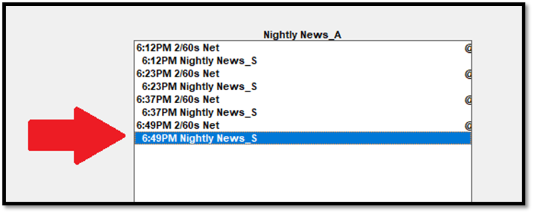

Terminating a Vehicle
This section describes the steps to follow when a vehicle needs to be terminated. A terminated vehicle is a vehicle that is no longer airing, and that should no longer be available to be sold in the system. Before beginning this termination procedure, determine the termination date of the vehicle, which is the Monday start date of the week that the vehicle will be terminated from.
Update Contracts
Edit existing contracts so that there are no spots active starting from the termination date.
Run the Paperwork Summary report by vehicle for the vehicle being terminated. On the report selection screen, enter Active Dates that start from the termination date. Include all contract types and proposal types, as there may be proposals referencing the vehicle being terminated that may also have to be updated.
Working from the contract list on the report, revise the contracts that are using the vehicle after the termination date. If a contract line starts after the termination date, then the line can simply be Canceled Before Start using the End button. If a line started before the termination date and continues after the termination date, use the End button to terminate the line starting from the vehicle termination date. The total gross can be adjusted, or the difference can be made up by adding spots to different vehicles.
Schedule all order changes.
Remove Links and Programming
Removing Selling to Airing Links
If the vehicle to be terminated is either a Selling or Airing vehicle, you must unlink the vehicle.
In the Programming Screen, click the Links button. Select Monday-Friday, Saturday, or Sunday (depending on the links that are defined for that vehicle), enter the date of termination in the Start Date field, select the group that contains the vehicle, and click the “Define Selling to Airing Links” button.
To unlink the links, on the Links screen, either click on the indented linked time and hold the mouse button down until the word DRAG appears, and without releasing the mouse, drag the link to the trash icon in the bottom right corner of the screen; or click on the indented linked time and click the trash icon.

Repeat this process for all the links that need to be removed.
Click Save to save the changes, then schedule the programming changes.
Terminating Programming
In the Programming Screen, select the vehicle to be terminated from the dropdown. Click on one of the white scheduled libraries and hold the mouse button down until the word DRAG appears (this must be done on a future day). The box will turn green.
Without releasing the mouse, drag the library to the trash icon, which will appear at the bottom of the screen.
This will bring up the “Removing Library” screen, shown below.

On this screen, enter the termination date as the “Delete From” date, and set the “Delete To” date to “TFN” (unless the vehicle programming is only being terminated for a limited amount of time, for example, for seasonal programming). Place a check mark in the check box for each day of the week for which the programming library should be removed, then press the Remove button. Repeat this process for each scheduled library for the vehicle being terminated. Then Schedule the changes on the Programming Schedule screen. (For complicated programming, it may be easier to schedule these changes in several steps to ensure all the programming is removed.)
Update Rate Card and Packages
In a later step, the vehicle will be set to a Dormant status. Dormant vehicles will be automatically filtered out from the Rate Card, but once a vehicle will no longer be sold, it should be removed from the current Rate Card. To remove a vehicle line from the Rate Card, drag the line to the trash icon and then press Save when complete. Each vehicle/daypart combination on the current rate card for the vehicle being terminated should be removed.
Vehicles that are being terminated should also be removed from standard packages on the Standard Package screen, which is accessed from the Rate Card screen. The Standard Packages report can be run for proofreading purposes. (Note: Dormant vehicles are shown on this report with a strike-through line, when running the report with the “include dormant vehicle” option checked on.)
Remove Log and Multi-Vehicle Log Links
If the vehicle to be terminated is a Log vehicle or Multi-Vehicle Log vehicle, remove the link with any other vehicles in the List -> Vehicle Screen.
Terminate Affiliate Agreements
The best way to terminate agreements for a vehicle that is being terminated is by using the Fast End utility, which is accessed from the Affiliate Agreements screen.
- Select the “Terminate agreements by Vehicle” radio button.
- From the “Terminate agreements for” dropdown, select the vehicle being terminated.
- Enter a Sunday end date, the day before the Monday termination date of the vehicle.
- If the stations being terminated are listed on an external file, it can be loaded using the Browse button, or the stations to terminated can be selected by moving them from the “Do not terminate these affiliates” list box to the “Terminate these affiliates” list box by pressing the All button to move all of them, or by selecting them individually or in groups using ctrl-click and shift-click.
- Once the stations to terminate have been selected, press the Update button to terminate them. Affiliate spots after the entered end date will be removed.
For additional information on terminating agreements, see the Affiliate Agreements section here.
The Affiliate Agreements report can be used to verify the agreements were properly terminated.
Set Vehicle to Dormant
Once the above steps have been completed, and the vehicle is ready to be set to dormant, from the Lists -> Vehicle screen, select the vehicle you are terminating, change the “Active or Dormant” status to “Dormant”, and then press Save. A warning message will appear with a reminder of the main steps that should be performed before setting a vehicle to dormant.
On the Proposals and Orders screen, dormant vehicles on a contract will be shown in red, as shown in the picture below. Dormant vehicles cannot be added to a new contract.